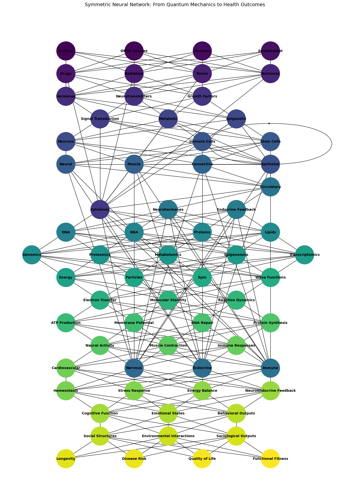

Games#
Show code cell source
import networkx as nx
import matplotlib.pyplot as plt
import numpy as np
# Define layers for the compression (input) phase
input_layers = {
"Biology": ['Ecology', 'Other Species', 'Humans', 'Environment'],
"Drugs and External Factors": ['Drugs', 'Radiation', 'Toxins', 'Nutrients'],
"Ligands & Receptors": ['Hormones', 'Neurotransmitters', 'Growth Factors', 'Cytokines'],
"Pathways": ['Signal Transduction', 'Metabolic', 'Epigenetic'],
"Cells": ['Neurons', 'Epithelial', 'Immune Cells', 'Stem Cells'],
"Tissues": ['Neural', 'Muscle', 'Connective', 'Epithelial'],
"Systems": ['Nervous', 'Endocrine', 'Immune', 'Circulatory'],
"Immuno-Neuro-Endocrinology": ['Cytokines', 'Neurohormones', 'Endocrine Feedback'],
"Molecular Biology": ['DNA', 'RNA', 'Proteins', 'Lipids'],
"Omics": ['Genomics', 'Proteomics', 'Metabolomics', 'Epigenomics', 'Transcriptomics'],
"Quantum": ['Energy', 'Particles', 'Spin', 'Wave Functions']
}
# Define layers for the decompression (output) phase
output_layers = {
"Molecular Outputs": ['Electron Transfer', 'Molecular Stability', 'Reaction Dynamics'],
"Cellular Behavior": ['ATP Production', 'Membrane Potential', 'DNA Repair', 'Protein Synthesis'],
"Tissue-Level Dynamics": ['Neural Activity', 'Muscle Contraction', 'Immune Responses'],
"Organ Systems": ['Cardiovascular', 'Nervous', 'Endocrine', 'Immune'],
"Physiological States": ['Homeostasis', 'Stress Response', 'Energy Balance', 'Neuroendocrine Feedback'],
"Behavioral and Psychological Outcomes": ['Cognitive Function', 'Emotional States', 'Behavioral Outputs'],
"Sociological and Environmental Interactions": ['Social Structures', 'Environmental Interactions', 'Sociological Outputs'],
"Functional Health Outcomes": ['Longevity', 'Disease Risk', 'Quality of Life', 'Functional Fitness']
}
# Merge the input and output layers to create a full network hierarchy
full_layers = {**input_layers, **output_layers}
# Initialize the graph
G_full_biology = nx.DiGraph()
# Add nodes for each layer
for layer_name, nodes in full_layers.items():
G_full_biology.add_nodes_from(nodes, layer=layer_name)
# Connect layers sequentially for symmetry
full_layer_names = list(full_layers.keys())
for i in range(len(full_layer_names) - 1):
source_layer = full_layers[full_layer_names[i]]
target_layer = full_layers[full_layer_names[i + 1]]
for source_node in source_layer:
for target_node in target_layer:
G_full_biology.add_edge(source_node, target_node)
# Define node positions for symmetric visualization
pos_full_biology = {}
layer_spacing = 2
node_spacing = 1.5
for i, (layer_name, nodes) in enumerate(full_layers.items()):
y = -i * layer_spacing + (len(full_layer_names) - 1) * layer_spacing / 2 # Center the graph vertically
for j, node in enumerate(nodes):
x = j * node_spacing - (len(nodes) - 1) * node_spacing / 2
pos_full_biology[node] = (x, y)
# Generate colors for all nodes dynamically
actual_full_node_count = len(G_full_biology.nodes())
node_colors_full_biology = plt.cm.viridis(np.linspace(0, 1, actual_full_node_count))
# Draw the full graph with expanded layers
plt.figure(figsize=(14, 20))
nx.draw(
G_full_biology,
pos_full_biology,
with_labels=True,
node_size=3000,
node_color=node_colors_full_biology,
font_size=10,
font_weight='bold',
arrows=False
)
# Add title and remove axes for clean visualization
plt.title("Symmetric Neural Network: From Quantum Mechanics to Health Outcomes", fontsize=14)
plt.axis('off')
plt.show()

Fig. 7 Conceptual Framework. This model can serve as a conceptual framework for understanding and predicting medical outcomes by integrating multiple scales of biological and environmental data#